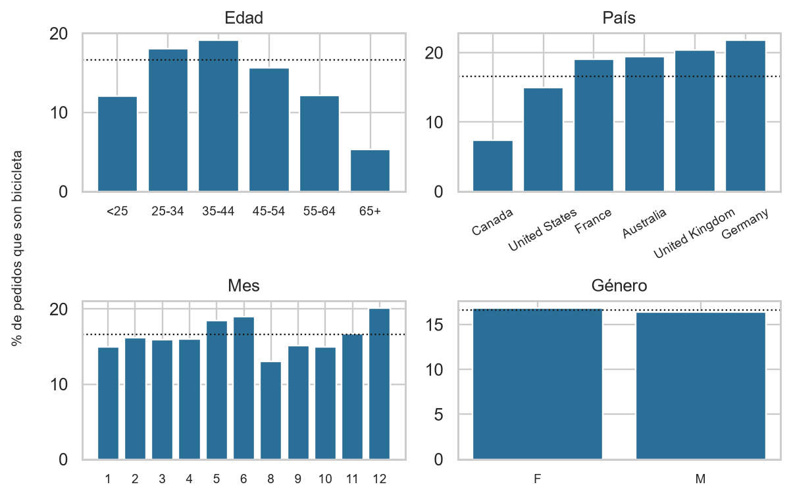
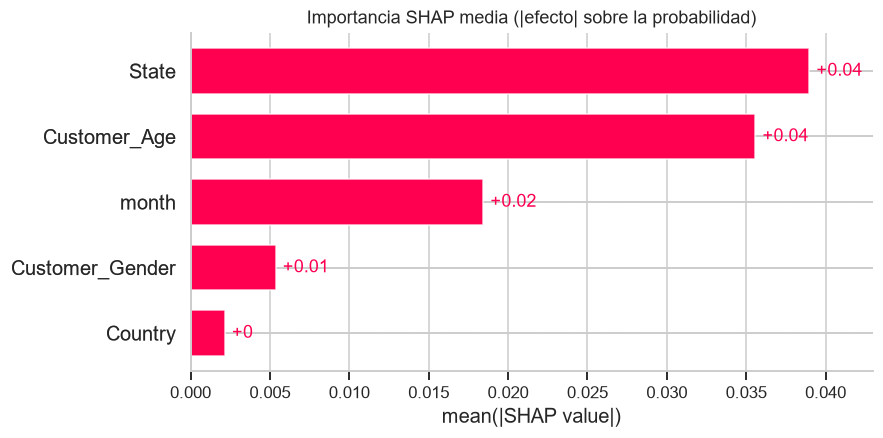

1Problema de negocio
Stakeholder: Gerencia de Marketing / Ventas Regionales.
Pregunta: dado el perfil de un cliente (edad, género, ubicación) y el mes, ¿qué probabilidad hay de que compre una bicicleta, y qué perfiles conviene priorizar?
Por qué importa: las bicicletas son el 17 % de los pedidos pero el 51 % de la ganancia ($711 por pedido vs. $128 en accesorios).
Objetivo y éxito: clasificación binaria (probabilidad para ordenar perfiles); ROC/PR-AUC sobre la línea base y % de compras capturadas con el top-k %.
2Datos
113,036 filas × 18 columnas (2011–2016). Sin ID de cliente: cada fila es una transacción.
- 0 faltantes · 1,000 duplicados exactos eliminados
- Atípicos (edad hasta 87; bicicletas caras) conservados: son ventas reales
- Meses con otro catálogo (solo bicicletas, lanzamiento, sin bicicletas) → excluidos: 22 meses estables
- Años que repiten el 100 % de las llaves de otros años → partición por grupos para evitar fuga
- Solo variables previas a la compra: edad, género, país, estado, mes
3Quién compra bicicletas

Mayor propensión a 25–44 años y en Alemania/Reino Unido; muy baja en Canadá y >64 años. El género casi no discrimina.
4Metodología (CRISP-DM) y arquitectura
features, grupos
baselines, búsqueda
aleatoria (25 conf.)
lift, ganancias,
importancia, gráficos
Kedro (catalog.yml, parameters.yml, kedro run) · GitHub Actions: Ruff + pytest + pipeline en cada push · validación cruzada agrupada 5-fold · 80/20 por grupos · IC por bootstrap
5Modelo seleccionado y resultados
HistGradientBoostingClassifier (scikit-learn): rápido (~1 min), categorías nativas, explicable. No se eligió solo por la métrica: la regresión logística (alternativa transparente) queda ≈6 puntos de AUC abajo.
IC95 %: 0.654–0.675
(azar: 0.162)
decil superior
30 % de contactos
| Prueba (n = 19,108) | ROC-AUC | PR-AUC | Brier |
|---|---|---|---|
| Baseline: prevalencia | 0.500 | 0.162 | 0.136 |
| Regresión logística | 0.599 | 0.208 | 0.134 |
| Gradient boosting (final) | 0.664 | 0.248 | 0.130 |
6Valor de negocio: lift y curva de ganancias

7Recomendaciones
- Priorizar, no excluir: primera ola al 20–30 % mejor puntuado (captura 32–46 % de las compras vs. 20–30 % al azar).
- Foco: 25–44 años; Bayern, Saarland, South Australia, Hessen. Probar accesorios o mensajes distintos en Canadá, EE. UU. y >64 años.
- No segmentar por género (aporte pequeño).
- Piloto A/B antes de escalar para medir efecto real y ROI.
- Revisar precios por país: ingreso/precio de lista ≈1 % menor en Canadá vs. ≈16 % en Australia (causa no documentada).
8Qué explica la predicción

Estado, edad y mes concentran la señal (SHAP e importancia por permutación coinciden).
!Limitaciones
- Señal moderada (AUC 0.66): ordena, no adivina individuos.
- Datos con rasgos artificiales; sin ID de cliente; el efecto del mes viene de un solo ciclo de 11 meses.
- Resultado observacional, no causal. Riesgo de discriminar si se usa para excluir.
- Calibración algo sobreconfiada en el tramo alto.
Referencias
Chapman et al. (2000) CRISP-DM 1.0 · Friedman (2001) Ann. Statist. 29(5) · Ke et al. (2017) LightGBM, NeurIPS · Pedregosa et al. (2011) scikit-learn, JMLR 12 · Kaufman et al. (2012) Leakage, ACM TKDD 6(4) · Saito & Rehmsmeier (2015) PLoS ONE · Bergstra & Bengio (2012) JMLR 13 · Lundberg & Lee (2017) SHAP, NeurIPS · Breiman (2001) Mach. Learn. 45 · Fisher et al. (2019) JMLR 20 · Niculescu-Mizil & Caruana (2005) ICML · Provost & Fawcett (2013) Data Science for Business · Efron & Tibshirani (1993) Bootstrap · Datos: Kaggle, jehanzaibbhatti/sales-data · Kedro (docs.kedro.org) · Ruff (docs.astral.sh/ruff).